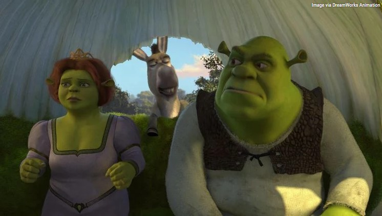
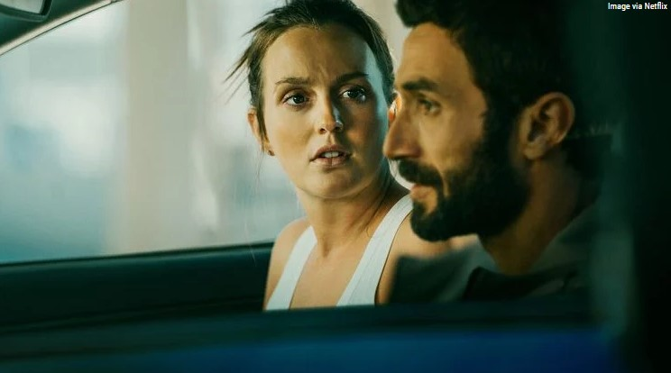
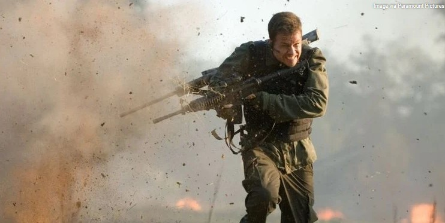
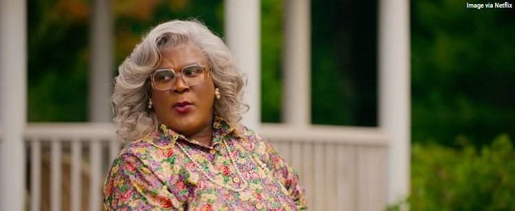
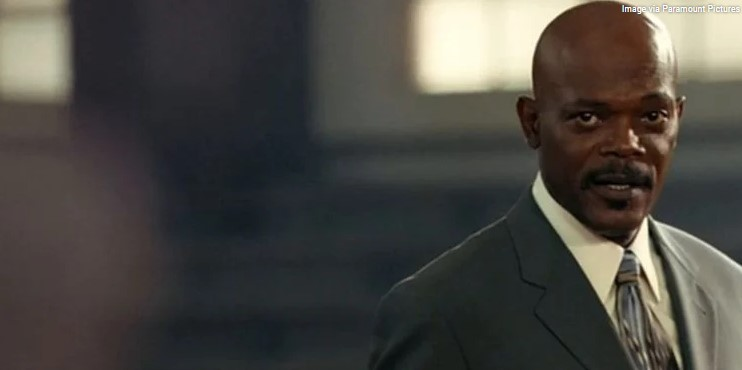
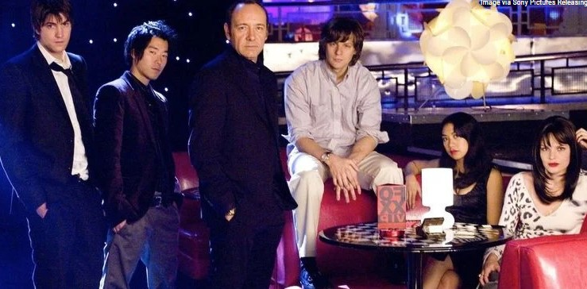
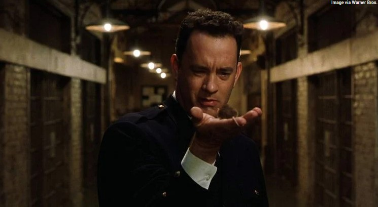
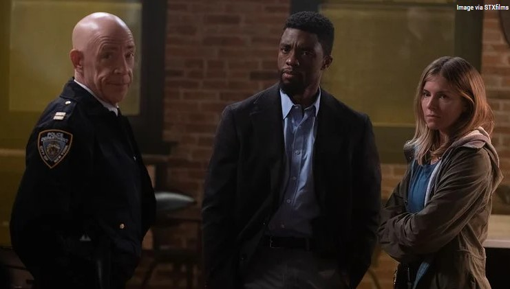

1. Shrek 2 Directors: Andrew Adamson, Kelly Asbury, and Conrad Vernon Writers: Andrew Adamson, Joe Stillman, J. David Stem, and David N. Weiss Cast: Mike Myers, Eddie Murphy, Cameron Diaz, Julie Andrews, Antonio Banderas, John Cleese, Rupert Everett, Jennifer Saunders Year: 2004 Genre: Animated Comedy What It's About: Happily ever after never seemed so far far away when a trip to meet the in-laws turns into a hilariously twisted adventure for Shrek (Mike Myers) and Fiona (Cameron Diaz). With the help of his faithful Donkey (Eddie Murphy), Shrek takes on a potion-brewing Fairy Godmother, the pompous Prince Charming (Rupert Everett), and the ogre-killer, Puss In Boots (Antonio Banderas) who's a pussycat at heart. |
2. ShrekDirectors: Andrew Adamson and Vicky Jenson Writers: Ted Elliott, Terry Rossio, Joe Stillman, and Roger S. H. Schulman Cast: Mike Myers, Eddie Murphy, Cameron Diaz, John Lithgow Year: 2001 Genre: Animated Comedy What It's About: Shrek (Mike Myers) goes on a quest to rescue the feisty Princess Fiona (Cameron Diaz) with the help of his loveable Donkey (Eddie Murphy) and win back the deed to his swamp from scheming Lord Farquaad.
|
3. The Weekend Away Director: Kim Farrant Writer: Sarah Alderson Cast: Leighton Meester, Christina Wolfe, Ziad Bakri, Luke Norris, Amar Bukvić, Iva Mihalić, Adrian Pezdirc, Parth Thakerar Year: 2022 Genre: Thriller What It's About: THE WEEKEND AWAY is an edge-of-your-seat thriller that follows two best friends on a vacation gone awry. When one of them goes missing, the other must prove her innocence but her efforts to get to the truth uncover painful secrets.
|
4. Shooter Director: Antoine Fuqua Writer: Jonathan Lemkin Cast: Mark Wahlberg, Michael Peña, Danny Glover, Kate Mara, Elias Koteas, Rhona Mitra, Rade Šerbedžija, and Ned Beatty Year: 2007 Genre: Action Thriller What It's About: Bob Lee Swagger (Mark Wahlberg), a former Marine Corps sniper who leaves the military after a mission goes bad. After he is reluctantly pressed back into service, Swagger is double-crossed again. With two bullets in him and the subject of a nationwide manhunt, Swagger begins his revenge, which will take down the most powerful people in the country.
|
5. Tyler Perry's A Madea Homecoming Director/Writer: Tyler Perry Cast: Tyler Perry, Cassi Davis-Patton, David Mann, Tamela Mann, Brandon Black, Gabrielle Dennis, and Brendan O'Carroll Year: 2022 Genre: Comedy What It's About: Madea prepares to welcome her family who have all come into town to celebrate her Great-Grandson’s graduation from college, when some hidden secrets threaten to destroy the joyous family homecoming. |
6. Coach Carter Director: Thomas Carter Writers: John Gatins and Mark Schwahn Cast: Samuel L. Jackson, Rob Brown, Channing Tatum, Debbi Morgan, Robert Ri'chard, Rick Gonzalez, and Ashanti. Year: 2005 Genre: Sports Drama What It's About: Academy Award nominee Samuel L. Jackson stars in the inspiring true story of controversial high school basketball coach Ken Carter, who benched his entire undefeated team for poor academic performance, in order to teach his players the importance of education. |
7. 21 Director: Robert Luketic Writers: Peter Steinfeld and Allan Loeb Cast: Jim Sturgess, Kevin Spacey, Laurence Fishburne, Kate Bosworth, Liza Lapira, Jacob Pitts, Aaron Yoo, and Kieu Chinh Year: 2008 Genre: Heist Drama What It's About: Inspired by the true story of MIT students who mastered the art of card counting and took Vegas casinos for millions in winnings. Looking for a way to pay for tuition, Ben Campbell (Jim Sturgess) finds himself quietly recruited by MIT's most gifted students in a daring plot to break Vegas. With the help of a brilliant statistics professor (Kevin Spacey) and armed with fake IDs, intelligence and a complicated system of counting cards, Ben and his friends succeed in breaking the impenetrable casinos. Now, his challenge is keeping the numbers straight and staying one step ahead of the casinos before it all spirals out of control. |
8. The Green Mile Director/Writer: Frank Darabont Cast: Tom Hanks, David Morse, Bonnie Hunt, Michael Clarke Duncan, James Cromwell, Michael Jeter, Graham Greene, Doug Hutchison, and Sam Rockwell Year: 1999 Genre: Fantasy Drama What It's About: Miracles happen in unexpected places, even on death row at Cold Mountain Penitentiary. There, John Coffey, a prisoner with supernatural powers, brings a sense of spirit and humanity to his guards and fellow inmates. Tom Hanks leads a stellar cast (including Michael Clarke Duncan as Coffey) in this uplifting story of guards and captives, husbands and wives; prisoners and a mouse names Mr. Jingles; and on another level, of a moviemaker and his source.
|
9. 21 Bridges Director: Brian Kirk Writers: Adam Mervis and Matthew Michael Carnahan Cast: Chadwick Boseman, Sienna Miller, Stephan James, Keith David, Taylor Kitsch, J.K. Simmons Year: 2019 Genre: Action Thriller What It's About: 21 BRIDGES follows an embattled NYPD detective (Chadwick Boseman), who is thrust into a citywide manhunt for a pair of cop killers after uncovering a massive and unexpected conspiracy. As the night unfolds, lines become blurred on who he is pursuing, and who is in pursuit of him. When the search intensifies, extreme measures are taken to prevent the killers from escaping Manhattan as the authorities close all 21 BRIDGES to prevent any entry or exit from the iconic island. |
10. Despicable Me 2Directors: Chris Renaud and Pierre Coffin Writers: Cinco Paul and Ken Daurio Cast: Steve Carell, Kristen Wiig, Benjamin Bratt, Miranda Cosgrove, Russell Brand, and Ken Jeong Year: 2013 Genre: Animated Comedy What It's About: Just as Gru has given up being super-bad to be a super-dad, the Anti-Villain League recruits him to track down a new criminal mastermind and save the world. Partnered with secret agent Lucy Wilde, Gru, along with the wildly unpredictable Minions, must figure out how to keep his cover while also keeping up with his duties as a father. |